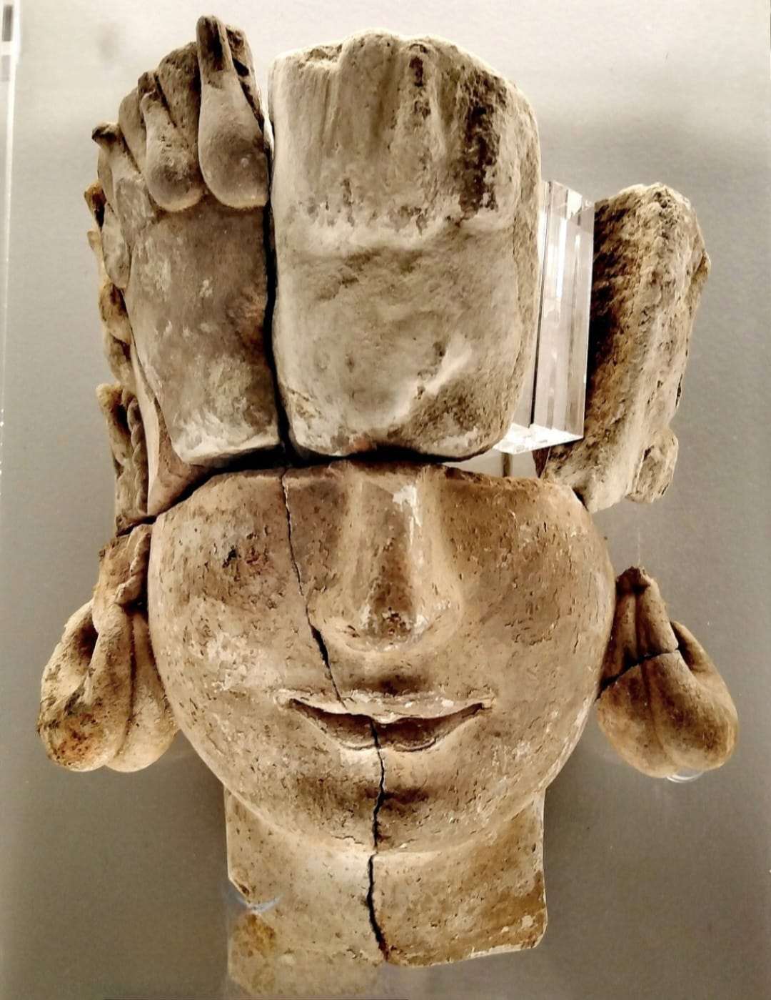
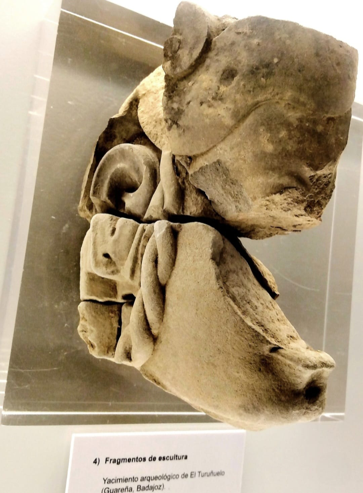
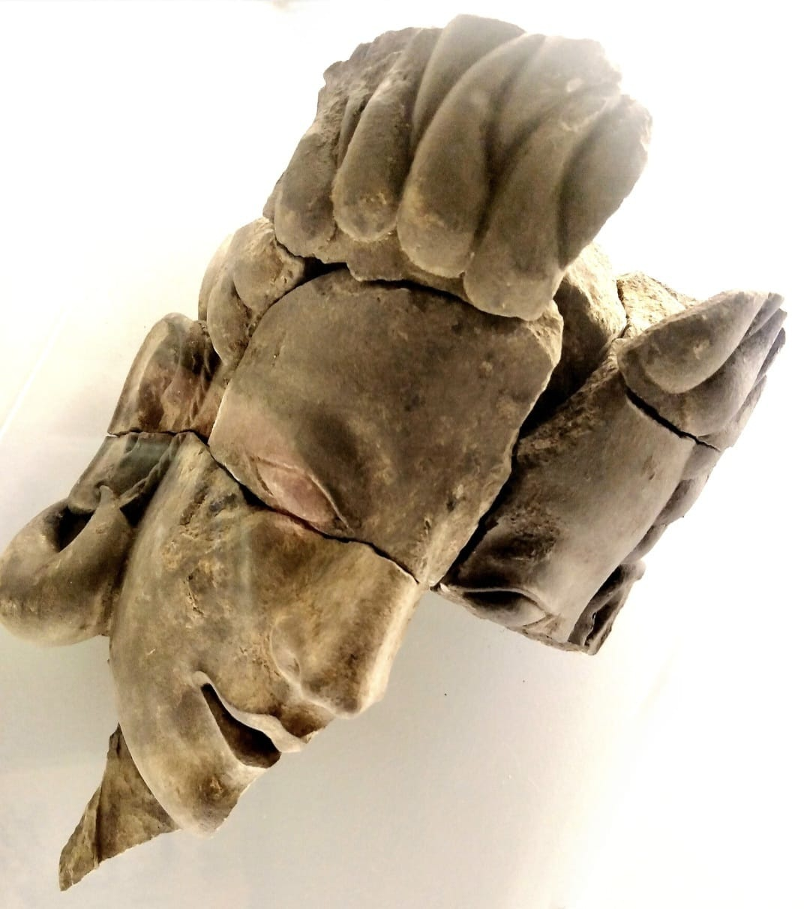
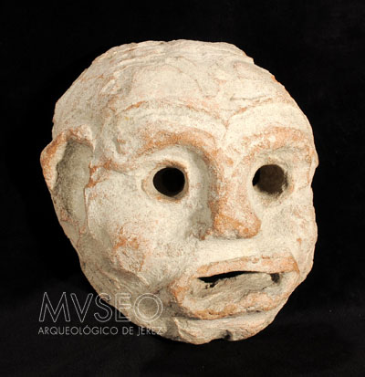
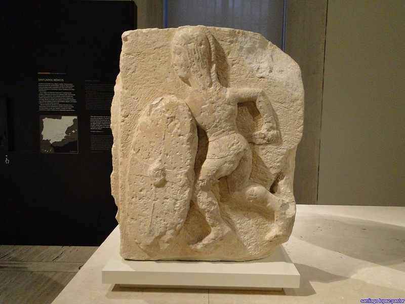
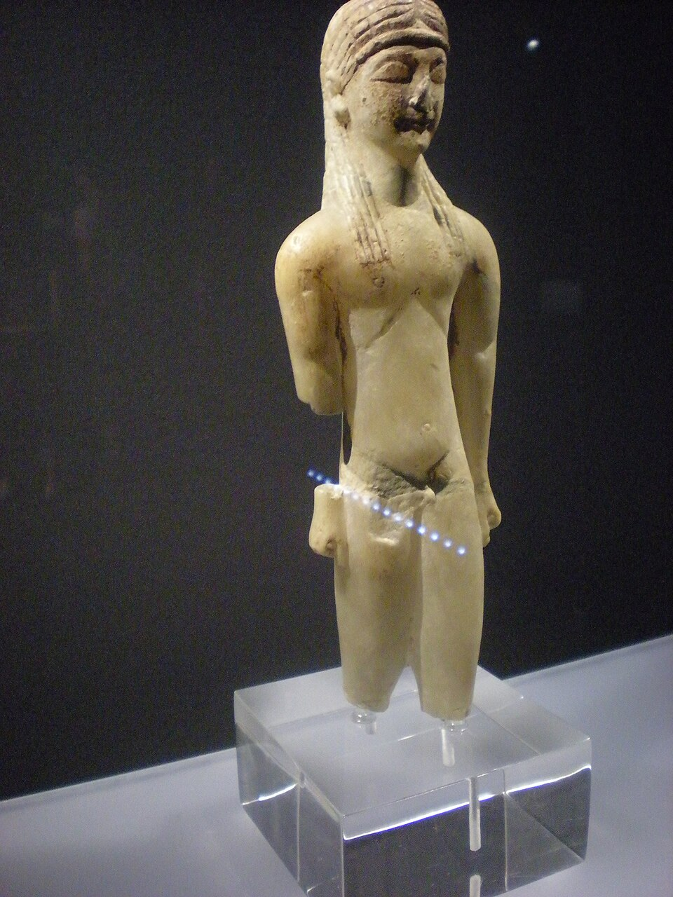

Las caras de El Turuñuelo
Análisis escultórico, proporción y patrimonio digital
En 2023, el equipo que excavaba El Turuñuelo (Guareña, Badajoz) descubrió algo sin precedentes: una serie de relieves en adobe que representaban rostros humanos en la fachada del edificio. Es la primera vez que se encuentran representaciones figurativas de este tipo en toda la protohistoria del interior de la Península Ibérica.
Hoy vamos a mirar estas caras como artistas, no solo como historiadores. ¿Qué técnica usaron? ¿Qué proporciones tienen? ¿En qué se parecen y en qué se diferencian de otras esculturas de su época?



Fotografías de las piezas expuestas en el museo. Clic en cada imagen para ampliar.
Identifica los planos del relieve
Haz clic en cada zona coloreada del diagrama para descubrir qué tipo de plano es y qué función cumple en el relieve.
Proporciones del rostro — el canon clásico
Arrastra cada etiqueta hasta la zona correcta del diagrama. El rostro humano sigue proporciones que los artistas han estudiado durante siglos.
Comparativa escultórica — tres tradiciones, tres técnicas
Observa las tres piezas y completa la tabla de análisis. Escribe tus observaciones en cada celda — no hay respuesta única, se trata de mirar con atención.
| Material | |
| Técnica | |
| Rasgos formales | |
| ¿Qué transmite? |

| Material | |
| Técnica | |
| Rasgos formales | |
| ¿Qué transmite? |

| Material | |
| Técnica | |
| Rasgos formales | |
| ¿Qué transmite? |

| Material | |
| Técnica | |
| Rasgos formales | |
| ¿Qué transmite? |
Ahora vas a dibujar tu propia reconstrucción hipotética de una de las caras de El Turuñuelo. No se trata de copiar: se trata de proponer cómo podría haber sido a partir de lo que sabes. Usa estas guías:
Verdadero o Falso — vocabulario de escultura
Decide si cada afirmación es verdadera o falsa. Cuando compruebes, verás la explicación de cada una.
Clasifica las técnicas — bulto redondo, relieve o grabado
Arrastra cada elemento al tipo de técnica escultórica al que pertenece.
Empareja — material y obra
Haz clic en un material de la columna izquierda y luego en la obra correspondiente de la derecha. Los pares correctos quedarán fijos en verde.
Esther Rodríguez González — codirectora del equipo
Esther Rodríguez González (CSIC) codirige el proyecto de El Turuñuelo y es la responsable científica del trabajo de campo. Cuando en 2023 su equipo descubrió los relieves de la fachada, fue ella quien coordinó la respuesta inmediata: documentar fotográficamente cada detalle antes de que el aire y la humedad pudiesen deteriorarlos.
El equipo que excava cada campaña tiene mayoría de mujeres en todos los niveles: arqueólogas, restauradoras, topógrafas y especialistas en fauna y paleobotánica. Esto no siempre fue así en la arqueología española.
Arqueóloga del CSIC, codirectora científica de El Turuñuelo. Especialista en protohistoria del suroeste peninsular. Descubrió el yacimiento en 2014 mientras realizaba su tesis doctoral.
Ver perfil de investigación →Arqueometalúrgica del CSIC, pionera en el estudio científico del oro antiguo en la Península Ibérica. Su obra Orfebrería prerromana (1991) es una referencia fundamental en arqueología protohistórica.
Ver en Wikipedia →Catedrática de Prehistoria de la UCM y máxima experta en escultura ibérica. Investigadora principal del proyecto «Escultura Ibérica: estudio iconográfico, tecnológico e historiográfico».
Ver en Wikipedia →Los relieves de adobe de El Turuñuelo son extraordinariamente frágiles. En cuanto se exponen al aire y la humedad, el deterioro comienza. Por eso el equipo de arqueólogos los documenta digitalmente de inmediato. Hoy vamos a recorrer ese proceso y a repetirlo nosotros con Meshy.
El flujo completo: del hallazgo al modelo 3D imprimible
Haz clic en cada paso del proceso para ver qué ocurre y por qué es importante.
y hallazgo
desde todos
los ángulos
puntos 3D
texturizado
(Meshy)
para impresora
física
Tu turno en Meshy — guión de trabajo en grupo
Sigue estos pasos con tu grupo. Marca cada paso cuando lo hayas completado. La cuenta de Gmail genérica la facilita la docente.
Reflexión final — tecnología, arte y patrimonio
Responde con tus propias palabras. No hay respuesta correcta o incorrecta: lo que importa es que pienses y argumentes.
La tecnología también es cosa de mujeres
La fotogrametría y el modelado 3D se han convertido en herramientas fundamentales para preservar el patrimonio cultural. Muchas de las personas que desarrollan y aplican estas técnicas en arqueología son mujeres.
Alicia Perea Caveda (CSIC) fue pionera en el análisis arqueométrico del oro antiguo, aplicando microscopía electrónica al estudio de la orfebrería prerromana española. Ana Margarida Arruda (Universidad de Lisboa) es la mayor experta en la presencia fenicia en el Atlántico occidental: sus excavaciones en Castro Marim y Santarém han transformado nuestra comprensión de cómo los fenicios llegaron a Portugal. Dos trayectorias distintas que demuestran que la arqueología y la tecnología al servicio de la historia tienen nombre de mujer.
Alicia Perea en Wikipedia →
Ana Margarida Arruda en Wikipedia →